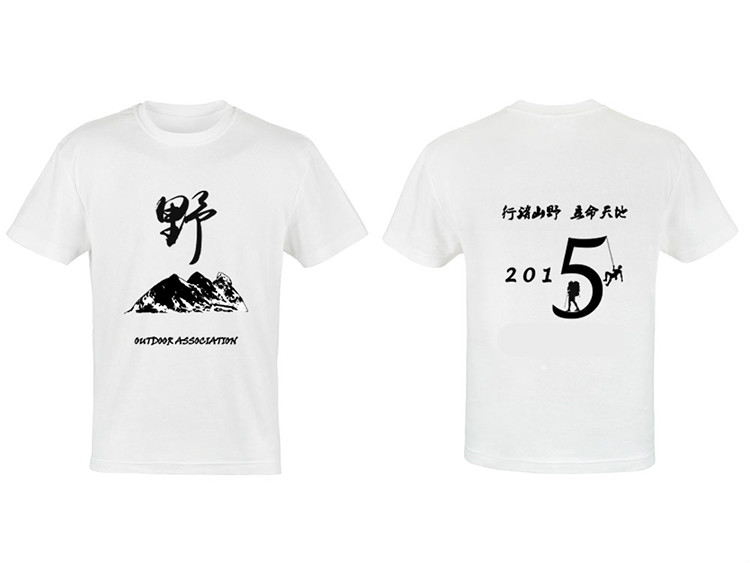
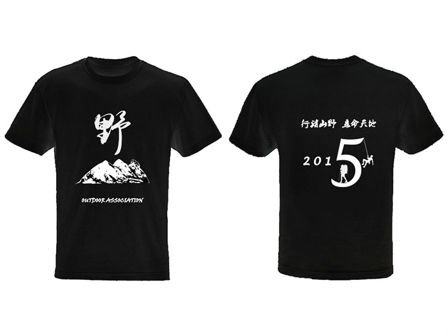
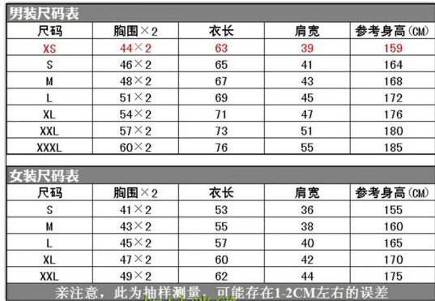

发信人: lllxxl (lllxxl), 信区: outdoor
标 题: 2015年野协会衫征订
发信站: 饮水思源 (2015年08月03日20:04:04 星期一)
会衫共两款，一黑一白：
 screen.width - 200){this.width = screen.width - 200}">
 screen.width - 200){this.width = screen.width - 200}">
尺码如下：
 screen.width - 200){this.width = screen.width - 200}">
订购方式：
回帖 注明以下：
1.男/女款
2.对应的尺码
3.白色/黑色
4.数量
请将领取人的姓名及联系方式投条给我。统一在闵行校区领取，领取时间可协调。
截止时间：2015年8月10日24:00
注：协会干事已经组织过一轮订购，当时定价是26元/件。今天联系卖家，对方表示可以按
此价格给我们加印，但考虑加印的件数可能比较少，不排除价格上浮的可能性。
----------------------------------------------------------------------------
以下是确认订购的名单汇总，随时更新：
cybersmart
男L 黑白各一件
女S 黑白各一件
lllxxl
男XS 黑白各一件
男M 白一件
女M 黑一件
男XL 黑一件
yanhao
男M 白一件
zzmax
男M 白一件
--
天高地阔任我行
※ 来源:·饮水思源 bbs.sjtu.edu.cn·[FROM: 117.186.145.94]
※ 修改:·lllxxl 于 2015年08月03日20:20:05 修改本文·[FROM: 117.186.145.94]
※ 修改:·lllxxl 于 2015年08月04日18:42:21 修改本文·[FROM: 117.186.145.94]
※ 修改:·lllxxl 于 2015年08月04日21:15:52 修改本文·[FROM: 117.135.105.126]
|